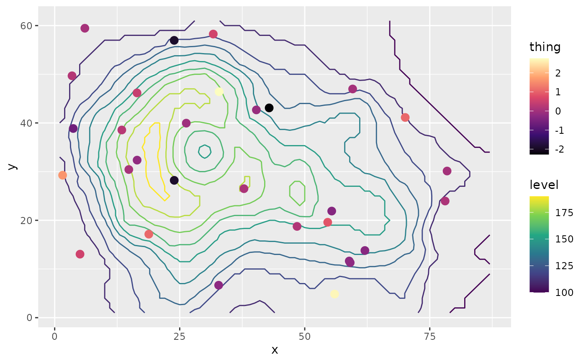

Creates a new scale "slot". Geoms added to a plot after this function will use a new scale definition.
Details
new_scale_color(), new_scale_colour() and new_scale_fill() are just
aliases to new_scale("color"), etc...
Examples
library(ggplot2)
# Equivalent to melt(volcano), but we don't want to depend on reshape2
topography <- expand.grid(x = 1:nrow(volcano),
y = 1:ncol(volcano))
topography$z <- c(volcano)
# point measurements of something at a few locations
measurements <- data.frame(x = runif(30, 1, 80),
y = runif(30, 1, 60),
thing = rnorm(30))
ggplot(mapping = aes(x, y)) +
geom_contour(data = topography, aes(z = z, color = stat(level))) +
# Color scale for topography
scale_color_viridis_c(option = "D") +
# geoms below will use another color scale
new_scale_color() +
geom_point(data = measurements, size = 3, aes(color = thing)) +
# Color scale applied to geoms added after new_scale_color()
scale_color_viridis_c(option = "A")
#> Warning: `stat(level)` was deprecated in ggplot2 3.4.0.
#> ℹ Please use `after_stat(level)` instead.
